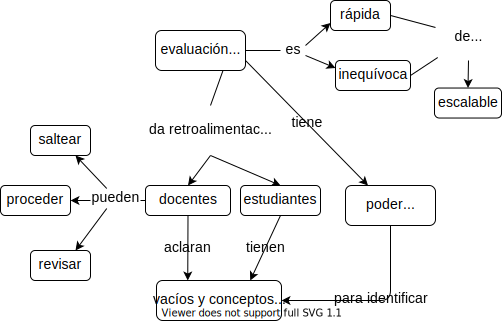

3 Modelos mentales y evaluación formativa
La primera tarea en la enseñanza es descifrar quiénes son tus estudiantes. Nuestra aproximación está basada en el trabajo de investigadores/as como Patricia Benner, quien estudió cómo las personas progresan de novatas a expertas en la carrera de enfermería Benner (2000). Benner identificó cinco etapas de desarrollo cognitivo que la mayor parte de la gente atraviesa de forma bastante consistente. Para nuestros propósitos, simplificamos esta evolución en tres etapas:
- Personas novatas
-
no saben qué es lo que no saben, es decir, aún no tienen un modelo mental utilizable del dominio del problema.
- Practicantes competentes
-
tienen un modelo mental que es adecuado para los propósitos diarios. Pueden llevar a cabo tareas normales con un esfuerzo normal bajo circunstancias normales y tienen algún entendimiento de los límites de su conocimiento (es decir, saben lo que no saben).
- Personas expertas
-
tienen modelos mentales que incluyen excepciones y casos especiales, los cuales les permiten manejar situaciones que están por fuera de lo ordinario. Discutiremos sobre la experiencia o pericia en más detalle en el Chapter 4.
Entonces, ¿qué es un modelo mental? Como el nombre lo sugiere, es una representación simplificada de las partes más importantes de algún dominio del problema; que a pesar de ser simplificada es suficientemente buena para permitir la resolución del problema. Un ejemplo es el modelo molecular de bolas y varillas que se usa en las clases de química de la escuela. Los átomos no son en realidad bolas y las uniones atómicas no son en realidad varillas, pero el modelo permite a la gente razonar sobre los componentes químicos y sus reacciones. Un modelo más sofisticado de un átomo es aquel con una bola pequeña en el centro (el núcleo) rodeada de electrones orbitantes. También es incorrecto, pero la complejidad extra permite explicar más y resolver más problemas. (Como con el software, los modelos mentales nunca están finalizados: simplemente son utilizados.)
Presentar a personas novatas un montón de hechos es contraproducente porque aún no tienen un modelo dónde ubicarlos. Incluso, apresurarse a presentar demasiados hechos puede reforzar el modelo mental incorrecto que han improvisado. Como observó Muller et al. (2007) en un estudio sobre video-instrucción para estudiantes de ciencia:
Los/las estudiantes tienen ideas existentes acerca de… los fenómenos antes de ver un video. Si el video presenta… conceptos de una forma clara, bien ilustrada, los/las estudiantes creen que están aprendiendo, pero no se involucran con el video en un nivel suficientemente profundo como para darse cuenta de que lo que se les ha presentado difiere de sus conocimientos previos… Sin embargo, hay esperanza. Se ha demostrado que el aprendizaje aumenta al presentar en un video… los conceptos erróneos comunes de los/las estudiantes junto con los… conceptos a enseñar, ya que aumenta el esfuerzo mental que los/las estudiantes realizan mientras miran el video.
Tu objetivo cuando enseñes a personas novatas debe ser, por lo tanto, ayudarlas a construir un modelo mental para que tengan algún lugar en el que ordenar los hechos. Por ejemplo, [la lección sobre la consola Unix][carpentries-shell-es] de Software Carpentry (carpinteros/as de software, en español) introduce quince comandos en tres horas. Eso sería un comando cada doce minutos, lo que parece muy lento hasta que te das cuenta de que el propósito real de la lección no es enseñar esos quince comandos: es enseñar las rutas de acceso, la historia de comandos, el autocompletado con el tabulador, los comodines, los pipes los argumentos de la línea de comando y las redirecciones. Los comandos específicos no tienen sentido hasta que las personas novatas entienden estos conceptos; una vez que lo hacen, pueden empezar a leer manuales, pueden buscar las palabras claves correctas en la web, y pueden decidir si los resultados de sus búsquedas son útiles o no.
Las diferencias cognitivas entre personas novatas y practicantes competentes apuntalan las diferencias entre dos tipos de materiales educativos. Un tutorial ayuda a construir un modelo mental a quienes recién llegan a un determinado campo; un manual, por otro lado, ayuda a practicantes competentes a llenar los baches de su conocimiento. Los tutoriales frustran a los/las practicantes competentes porque avanzan demasiado lento y dicen cosas que son obvias (aunque no son para nada obvias para personas novatas). De la misma manera, los manuales frustran a las personas novatas porque usan jergas y no explican las cosas. Este fenómeno se llama el efecto inverso de la experiencia Kalyuga et al. (2003), y es una de las razones por las que tienes que decidir tempranamente para quiénes son tus lecciones.
3.0.1 Un puñado de excepciones
Una de las razones por las que Unix y C se hicieron populares es que Kernighan and Plauger (1978),Kernighan and Pike (1983),Kernighan and Ritchie (1988) de alguna manera consiguieron tener buenos tutoriales y buenos manuales al mismo tiempo. Fehily (2008) y Ray and Ray (2014) están entre los otros pocos libros de computación que consiguieron esto; incluso luego de releerlos varias veces, Greg no sabe cómo lo lograron.
3.1 ¿Están aprendiendo tus estudiantes?
Mark Twain escribió: “No es lo que no sabes lo que te mete en problemas. Es lo que tienes seguridad de saber y simplemente no es así.” Uno de los ejercicios al construir un modelo mental es, por lo tanto, despejar las cosas que no pertenecen al modelo. En sentido amplio, los conceptos erróneos de las personas novatas caen en tres categorías:
- Errores fácticos
-
como creer que Río de Janeiro es la capital de Brasil (es Brasilia). Estos errores generalmente son fáciles de corregir.
- Modelos rotos
-
como creer que el movimiento y la aceleración deben estar en la misma dirección. Podemos lidiar con estos errores haciendo que las personas novatas razonen a través de ejemplos en los que sus modelos den una respuesta incorrecta.
- Creencias fundamentales
-
como por ejemplo “el mundo solo tiene algunos miles de años de antigüedad” o “algunos tipos de personas son naturalmente mejores en programación que otros” Guzdial (2015),Patitsas et al. (2016). Estos errores están generalmente conectados profundamente con la identidad social del estudiante, por lo que resisten a las evidencias y racionalizan las contradicciones.
La gente aprende más rápido cuando los/las docentes identifican y aclaran los conceptos erróneos de sus estudiantes mientras se está dando la lección. Esto se llama evaluación formativa porque forma (o le da forma a) la enseñanza mientras se está llevando a cabo. Los/las estudiantes no aprueban o reprueban una evaluación formativa. En cambio, la evaluación formativa da, tanto a quien enseña como a quien aprende, retroalimentación sobre qué tan bien les está yendo y en qué se deberían enfocar en los próximos pasos. Por ejemplo, un/una docente de música le puede pedir a un/una estudiante que toque una escala muy lentamente para chequear su respiración. Entonces, el/la estudiante averigua si la respiración es correcta, mientras que el/la docente recibe una devolución sobre si la explicación que acaba de dar fue comprendida.
3.1.1 En resumen
El contrapunto de la evaluación formativa es la evaluación sumativa, que tiene lugar al final de la lección. La evaluación sumativa es como un examen de conducir: le dice a quien está aprendiendo a conducir si ha dominado el tópico y a quien le está enseñando si su lección ha sido exitosa. Una forma de pensar la diferencia entre los dos tipos de evaluaciones es realizando una analogía con la cocina: quien prueba la comida mientras cocina está haciendo evaluaciones formativas, mientras quien es comensal y prueba la comida cuando se le sirve está haciendo una evaluación sumativa. Desafortunadamente, la escuela ha entrenado a la mayoría de la gente para creer que toda evaluación es sumativa, es decir, que si algo se siente como un examen, resolverlo pobremente le jugaría en contra. Hacer que las evaluaciones formativas se sientan informales reduce esta ansiedad; en mi experiencia, usar cuestionarios en línea, o donde deba hacerse click, o cualquier cosa semejante parece aumentar la ansiedad, ya que hoy en día la mayoría de la gente cree que todo lo que hace en internet está siendo mirado y grabado.
Para ser útil durante la enseñanza, una evaluación formativa debe ser rápida de administrar (de manera que no rompa el flujo de la lección) y debe tener una respuesta correcta no ambigua (de manera que pueda ser usada en grupos). Probablemente, el tipo de evaluación formativa que más ampliamente se usa es la pregunta de opción múltiple. Muchos/as docentes tienen una mala opinión sobre ellas, pero cuando las preguntas de opción múltiple están bien diseñadas pueden revelar mucho más si alguien sabe o no algunos hechos específicos. Por ejemplo, si estás enseñando a niños/as cómo hacer sumas de números con múltiples dígitos Ojose (2015) y les das esta pregunta de opción múltiple:
¿Cuánto es 37 + 15? 1. 52 2. 42 3. 412 4. 43
La respuesta correcta es 52, pero las otras respuestas proporcionan información valiosa:
Si el/la niño/a elige 42, no entiende qué significa “llevarse” una unidad. (Podría escribir 12 como respuesta a 7+5, pero luego reemplazaría el 1 con el 4 que obtiene de la suma de 3+1.)
Si elige 412, está tratando a cada columna de números como un problema separado. Esto sigue siendo incorrecto, pero es incorrecto por un motivo distinto.
Si elige 43, entonces sabe que tiene que llevarse el 1, pero lo lleva de vuelta a la columna de la que viene. De nuevo, es un error distinto que requiere de una explicación clarificadora diferente por parte de quien enseña.
Cada una de estas respuestas incorrectas es un distractor plausible con poder diagnóstico. Un distractor es una respuesta incorrecta o peor que la mejor respuesta; “plausible” significa que parece que podría ser correcta, mientras que “poder diagnóstico” significa que cada uno de los distractores ayuda al/a la docente a darse cuenta de qué explicar a continuación a estudiantes puntuales.
La variedad de respuestas a una evaluación formativa te guía cómo continuar. Si una cantidad suficiente de la clase tiene la respuesta correcta, avanzas. Si la mayoría de la clase elige la misma respuesta incorrecta, deberías retroceder y trabajar en corregir el concepto erróneo que ese distractor señala. Si las respuestas de la clase se dividen equitativamente entre varias opciones, probablemente están arriesgando, entonces deberías retroceder y re-explicar la idea de una manera distinta. (Repetir exactamente la misma explicación probablemente no será útil, lo cual es uno de los motivos por los que tantos cursos por video son pedagógicamente ineficientes.)
¿Qué pasa si la mayoría de la clase vota por la respuesta correcta pero un grupo pequeño vota por las incorrectas? En ese caso, tienes que decidir si deberías destinar tiempo a que la minoría entienda o si es más importante mantener a la mayoría cautivada. No importa cuán duro trabajes o qué prácticas de enseñanza uses, no siempre vas a conseguir darle a todo tu curso lo que necesita; es tu responsabilidad como docente tomar la decisión.
3.1.2 ¿De dónde vienen las respuestas incorrectas?
Para diseñar distractores plausibles, piensa en las preguntas que tus estudiantes hicieron o en los problemas que tuvieron la última vez que enseñaste esa temática. Si no la has enseñado antes, piensa en tus propios conceptos erróneos, pregúntale a colegas sobre sus experiencias o busca la historia de tu campo temático: si las demás personas han tenido los mismos malentendidos sobre la temática cincuenta años atrás, hay chances de que la mayoría de tus estudiantes aún malentiendan la temática de la misma forma al día de hoy. También puedes hacer preguntas abiertas en clase para recoger los conceptos erróneos sobre los temas que vas a abarcar en una clase posterior, o consultar sitios de preguntas y respuestas como [Quora][quota] o [Stack Overflow][stack-overflow] para ver con qué se confunden quienes aprenden la temática en cualquier otro lugar.
Desarrollar evaluaciones formativas mejora tus lecciones porque te fuerza a pensar en los modelos mentales de tus estudiantes. En mi experiencia, al pensar evaluaciones formativas automáticamente escribo la lección de forma de abarcar los baches y errores más probables. Las evaluaciones formativas, por lo tanto, dan buenos resultados incluso si no son utilizadas (aunque la enseñanza es más efectiva cuando sí se utilizan).
Las preguntas de opción múltiple no son el único tipo de evaluación formativa: el Chapter 13 describe otros tipos de ejercicios que son rápidos y no son ambiguos. Cualquiera sea la evaluación que escojas, deberías hacer alguna que tome un minuto o dos cada 10–15 minutos de manera de asegurarte de que tus estudiantes están realmente aprendiendo. Este ritmo no está basado en un límite de atención intrínseco: Wilson and Korn (2007) encontró poca evidencia a favor de la afirmación usualmente repetida de que los/las estudiantes solo pueden prestar atención durante 10–15 minutos. En cambio, la guía asegura que, si un número significativo de personas se ha quedado atrás, solo tienes que repetir una pequeña porción de la lección. Las evaluaciones formativas frecuentes también mantienen el compromiso de tus estudiantes, particularmente si se involucran en una discusión en un grupo pequeño (Section 10.2).
Las evaluaciones formativas también pueden ser usadas antes de las lecciones. Si comienzas una clase con una pregunta de opción múltiple y toda la clase la contesta correctamente, puedes evitar explicar algo que tus estudiantes ya saben. Este tipo de enseñanza activa te da más tiempo para enfocarte en las cosas que tus estudiantes no saben. También le muestra a tus estudiantes que respetas su tiempo lo suficiente como para no desperdiciarlo, lo que ayuda a la motivación (Chapter 11).
3.1.3 Inventario de conceptos
Con una cantidad de datos suficiente, las preguntas de opción múltiple pueden ser sorprendentemente precisas. El ejemplo más conocido es el inventario del concepto de fuerza Hestenes, Wells, and Swackhamer (1992), que evalúa la comprensión sobre los mecanismos básicos newtonianos. Al entrevistar a un gran número de participantes, correlacionando sus conceptos erróneos con los patrones de respuestas correctas e incorrectas, así como mejorando las preguntas, los creadores de este inventario construyeron una herramienta de diagnóstico que permite identificar conceptos erróneos específicas. Las personas que investigan pueden utilizar dicha herramienta para medir el efecto de los cambios en los métodos de enseñanza Hake (1998). Tew y colaboradores desarrollaron y validaron una evaluación independiente del lenguaje para programación introductoria Tew and Guzdial (2011); Parker, Guzdial, and Engleman (2016) la replicaron y Hamouda et al. (2017) está desarrollando un inventario de conceptos sobre la recursividad. Sin embargo, es muy costoso construir herramientas de este tipo y su validez está cada vez más amenazada por la habilidad de los/las estudiantes para buscar respuestas en línea.
Desarrollar evaluaciones formativas en una clase solo requiere un poco de preparación y práctica. Puedes darles a tus estudiantes tarjetas coloreadas o numeradas para que respondan una pregunta de opción múltiple simultáneamente (en lugar de que tengan que levantar sus manos en turnos), incluyendo como una de las opciones “No tengo idea” y alentando que hablen un par de segundos con sus pares más cercanos antes de responder. Todas estas prácticas te ayudarán a garantizar que el flujo de enseñanza no sea interrumpido. La Section 10.2 describe un método de enseñanza poderoso y basado en evidencias, construido a partir de estas simples ideas.
3.1.4 Humor
Los/las docentes a veces incluyen respuestas supuestamente tontas en las preguntas de opción múltiple, como “¡mi nariz!”, particularmente en los cuestionarios destinados a estudiantes jóvenes. Sin embargo, estas respuestas no proveen ninguna idea sobre los conceptos erróneos de los/las estudiantes y la mayoría de la gente no las encuentran graciosas. Como regla, deberías solo incluir un chiste en una lección si lo encuentras gracioso la tercera vez que lo relees.
Las evaluaciones formativas de una lección deberían preparar a los/las estudiantes para una evaluación sumativa: nadie debería encontrar nunca una pregunta en un examen para la cual la enseñanza no lo/la ha preparado. Esto no significa que nunca debes incluir nuevos tipos de problemas en un examen, pero, si lo haces, deberías haber ejercitado de antemano a tus estudiantes para abordar problemas nuevos. El Chapter 7 explora este punto en profundidad.
3.2 Máquina nocional
El término pensamiento computacional está muy extendido, en parte porque la gente coincide en que es importante aún cuando con el mismo término se suele referir a cosas muy distintas. En vez de discutir qué incluye y qué no incluye el término, es más útil pensar en la máquina nocional que quieres que tus estudiantes entiendan Boulay (1986). De acuerdo a Sorva (2013), una máquina nocional:
es una abstracción idealizada del hardware de computadora y de otros aspectos de los entornos de ejecución de los programas;
permite describir la semántica de los programas; y
refleja correctamente qué hacen los programas cuando son ejecutados.
Por ejemplo, mi máquina nocional para Python es:
Ejecutar programas en el momento en la memoria, la cual se divide en la pila de llamadas y la cola de montículo (heap en inglés).
La memoria para los datos siempre es asignada desde la cola del montículo.
Cada conjunto de datos se almacena en una estructura de dos partes. La primera parte dice de qué tipo de datos se trata y la segunda parte es el valor real.
Booleanos, números y caracteres de texto nunca son modificados una vez que se crean.
Las listas, conjuntos y otras colecciones almacenan referencias a otros datos en lugar de almacenar estos valores directamente. Pueden ser modificados una vez que se crean, es decir, una lista puede ser ampliada o nuevos valores pueden ser agregados a un conjunto.
Cuando un código se carga a la memoria, Python lo convierte a una secuencia de instrucciones que son almacenadas como cualquier otro tipo de dato. Este es el motivo por el que es posible asignar funciones a variables y luego pasarlas como parámetros.
Cuando un código es ejecutado, Python sigue las instrucciones paso a paso, haciendo lo que cada instrucción le indica de a una por vez.
Algunas instrucciones hacen que Python lea datos, haga cálculos y cree nuevos datos. Otras, controlan qué instrucciones va a ejecutar, como los bucles y condicionales; también hay instrucciones que le indican a Python que llame a una función.
Cuando se llama a una función, Python coloca un nuevo marco de pila en la pila de llamadas.
Cada marco de pila almacena los nombres de las variables y las referencias a los datos. Los parámetros de las funciones son simplemente otro tipo de variable.
Cuando una variable es utilizada, Python la busca en el marco de la pila superior Si no la encuentra allí, busca en el último marco en la memoria global.
Cuando la función finaliza, Python la borra del marco de la pila y vuelve a las instrucciones que estaba ejecutando antes de llamar a la función. Si no encuentra un “antes,” el programa ha finalizado.
Uso esta versión caricaturizada de la realidad siempre que enseño Python. Después de 25 horas de instrucción y 100 horas de trabajar por su cuenta, espero que la mayor parte del grupo tenga un modelo mental que incluya todas o la mayoría de estas características.
3.3 Ejercicios
3.3.1 Tus modelos mentales (pensar-parejas-compartir/15’)
¿Cuál es el modelo mental que usas para entender tu trabajo? Escribe unas pocas oraciones para describirlo y hazle una devolución a tu pareja sobre su modelo mental. Una vez que has hecho esto en pareja, algunas pocas personas de la clase compartirán sus modelos con el grupo completo. ¿Está todo el grupo de acuerdo sobre qué es un modelo mental? ¿Es posible dar una definición precisa?, ¿o el concepto es útil justamente porque es difuso?
3.3.2 Síntomas de ser una persona novata (toda la clase/5’)
Decir que las personas novatas no tienen un modelo mental de un dominio particular no es equivalente a decir que no tienen ningún modelo mental. Las personas novatas tienden a razonar por analogía y arriesgan conjeturas: toman prestado fragmentos y partes de modelos mentales de otros dominios que superficialmente parecen similares.
La gente que hace esto generalmente dice cosas que [ni siquiera son falsas][not-even-wrong-es]. Como clase, discutan qué otros síntomas tiene una persona novata. ¿Qué dice o hace una persona para llevarte a clasificarla como novata en algún dominio?
3.3.3 Modelar modelos mentales de las personas novatas (parejas/20’)
Crea una pregunta de opción múltiple relacionada a un tópico que has enseñado o pretendas enseñar y explica el poder diagnóstico de cada uno de sus distractores (es decir, qué concepto erróneo pretende ser identificado con cada distractor).
Una vez que hayas finalizado, intercambia las preguntas de opción múltiple con tu pareja. ¿Son sus preguntas ambiguas? ¿Son los conceptos erróneos plausibles? ¿Los distractores realmente evalúan esos conceptos erróneos? ¿Hay otros posibles conceptos erróneos que no sean evaluados?
3.3.4 Pensar en las cosas (toda la clase/15’)
Una buena evaluación formativa requiere que la gente piense profundamente en un problema. Por ejemplo, imagina que has colocado un bloque de hielo en un recipiente y luego llenas de agua este recìpiente, hasta el borde. Cuando el hielo se derrite, ¿el nivel de agua aumenta (de manera que el recipiente rebasa)?, ¿el nivel de agua baja?, ¿o se mantiene igual Figure 3.1?
La solución correcta es que el nivel del recipiente permanece igual: el hielo desplaza a su propio peso en el agua, por lo que completa exactamente el “agujero” que ha dejado al derretirse. Para darse cuenta del porqué la gente construye un modelo de la relación entre el peso, el volumen y la densidad Epstein (2002).
Describe otra evaluación formativa que conozcas o hayas utilizado, alguna que consideres que lleve a los/las estudiantes a pensar profundamente en algo, y por lo tanto ayude a identificar los defectos en sus razonamientos.
Cuando hayas finalizado, explícale tu ejemplo a otra persona de tu grupo y dale una devolución sobre su ejemplo.
3.3.5 Una progresión diferente (individual/15’)
El modelo de desarrollo de habilidades de persona novata-competente-experta es a veces llamado [modelo Dreyfus][dreyfus-model-es]. Otra progresión comúnmente utilizada es el modelo de las [cuatro etapas de la competencia][four-stages-competence-es]:
- Incompetencia inconsciente:
-
la persona no sabe lo que no sabe.
- Incompetencia consciente:
-
la persona se da cuenta de que no sabe algo.
- Competencia consciente:
-
la persona ha aprendido cómo hacer algo, pero solo lo puede hacer mientras mantiene su concentración y quizás aún deba dividir la tarea en varios pasos.
- Competencia inconsciente:
-
la habilidad se ha transformado en una segunda naturaleza y la persona puede realizarla reflexivamente.
Identifica una temática en la que te encuentres en cada uno de los niveles de desarrollo de habilidades. En la materia que enseñas, ¿en qué nivel están usualmente la mayoría de tus estudiantes? ¿Qué nivel estás tratando que alcancen? ¿Cómo se relacionan estas cuatro etapas con la clasificación persona novata-competente-experta?
3.3.6 ¿Qué tipo de computación? (individual/10’)
Tedre and Sutinen (2008) resume tres tradiciones en computación:
- Matemática:
-
Los programas son la encarnación de los algoritmos. Son correctos o incorrectos, así como más o menos eficientes.
- Científica:
-
Los programas son modelos de procesos de información más o menos adecuados que pueden ser estudiados usando el método científico.
- Ingenieril:
-
Los programas son objetos que se construyen, tales como los diques y los aviones, y son más o menos efectivos y confiables.
- description
-
¿Cuál de estas tradiciones coincide mejor con tu modelo mental de la computación? Si ninguna de ellas coincide, ¿qué modelo tienes?
3.3.7 Explicar por qué no (parejas/5’)
Una persona de tu curso piensa que hay algún tipo de diferencia entre el texto que tipea carácter por carácter y el texto idéntico que copia y pega. Piensa en una razón por la que tu estudiante puede creer esto o en algo que pueda haber sucedido para darle esa impresión. Luego, simula ser esa persona mientras tu pareja te explica por qué no es así. Intercambia roles con tu pareja y vuelve a probar.
3.3.8 Tu modelo ahora (toda la clase/5’)
Como clase, creen una lista de elementos clave de tu modelo mental de enseñanza. ¿Cuáles son los seis conceptos más importantes y cómo se relacionan?
3.3.9 Tus máquinas nocionales (grupos pequeños/20’)
En grupos pequeños, escriban una descripción de la máquina nocional que quieren que sus estudiantes usen para entender cómo corren sus programas. ¿En qué difiere una máquina nocional para un lenguaje basado en bloques como Scratch de la máquina nocional para Python? ¿Y en qué difiere de una máquina nocional para hojas de cálculo o para un buscador que está interpretando HTMLSigla de HyperText Markup Language en inglés y CSSSigla de Cascading Style Sheets en inglés cuando renderiza una página web?
3.3.10 Disfrutar sin aprender (individual/5’)
Muchos estudios han mostrado que las evaluaciones de la enseñanza no se correlacionan con los resultados de la enseñanza Stark and Freishtat (2014),Uttl, White, and Gonzalez (2017), es decir, cuán alto sea el puntaje del grupo de estudiantes en un curso no predice cuánto recuerdan. ¿Alguna vez has disfrutado de una clase en la que en realidad no has aprendido nada? Si la respuesta es sí, ¿qué hizo que disfrutes esa clase?
3.4 Revisión

